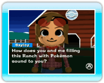
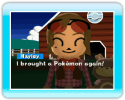
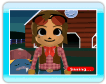

|
8
|
How to Start and Save a Game
|
 |
|
Starting a Game (Day 1)
If it's your first time playing My Pokémon
Ranch, an owner named Hayley will explain the game to you. Just
press Starting a Game (Day 2 or later)
The game starts with Hayley introducing the Pokémon she brought for the day. If you previously met a certain requirement, your Ranch's level gets higher. If your Ranch's level gets high enough, you will be able to use Free Mode, Favorites (where you can mark your favorite Pokémon), and other fun features. Time in My Pokémon
Ranch
At the Ranch, the color of the sky changes from morning to noon, noon to afternoon, and afternoon to night approximately every 15 minutes. At the beginning of the game, Hayley brings a Pokémon every day and helps you to increase the number of Pokémon on your Ranch. Save
Game data is saved automatically. Note:
How to prevent the My Pokémon Ranch save data from being erased. The actions below may corrupt or cause a loss of save data. Lost save data cannot be restored.
|
 to follow along. If Hayley asks you a question,
point at your answer and press
to follow along. If Hayley asks you a question,
point at your answer and press  |
 |
 |